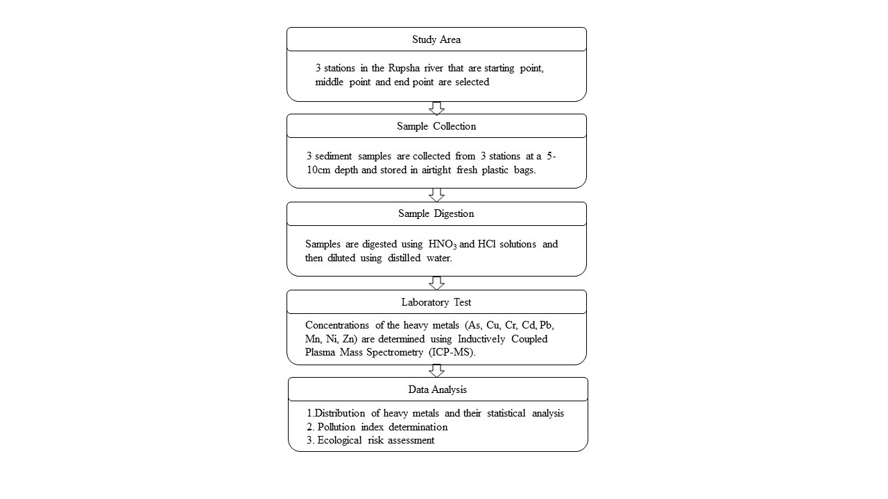
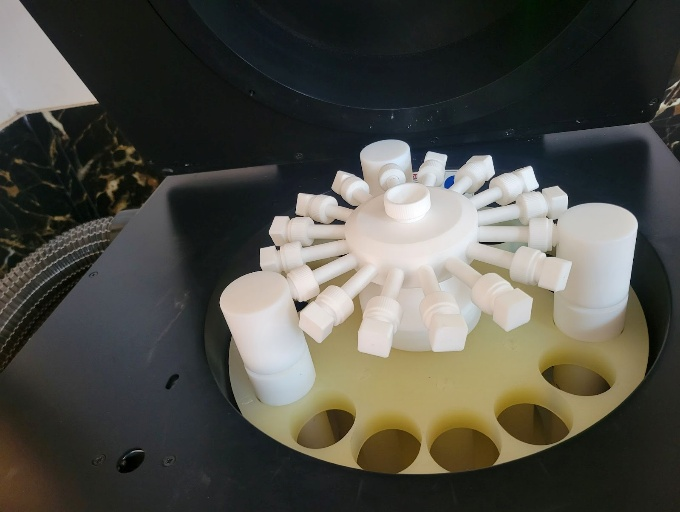
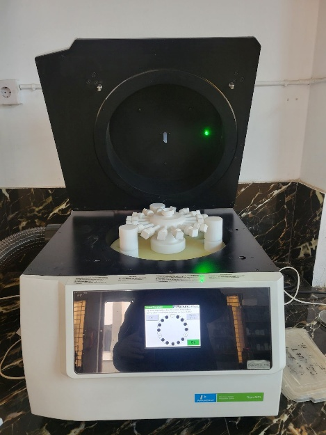
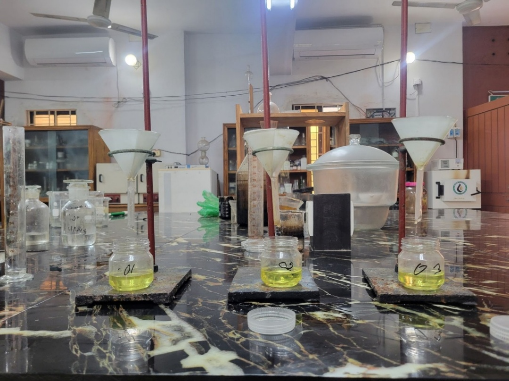
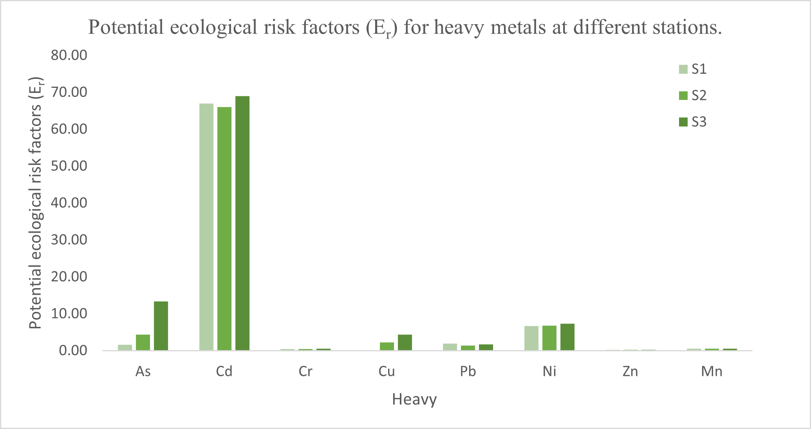

Problem and study objective
The Rupsha River passes through an industrial and commercial region of Khulna where river sediments can integrate contaminant inputs over time. Because metals can accumulate in sediment and later become ecologically relevant, the study was designed to quantify selected heavy metals, compare observed concentrations with published sediment-quality benchmarks and earlier literature, and evaluate contamination and ecological risk through established indices.
The study focused on eight metals—As, Cd, Cr, Cu, Pb, Ni, Zn and Mn—in surface sediment collected from three river stations.

Research workflow
The study moved from site selection and sediment collection through laboratory preparation, elemental measurement and index-based interpretation. Multiple indices were used because no single metric describes every aspect of sediment contamination.

Sampling, digestion and ICP-MS measurement
Surface sediments were collected from three stations. The supplied study describes microwave-assisted digestion of sediment samples, filtration after digestion, and elemental analysis by Shimadzu ICPMS-2030LF.



Measured concentration pattern
The study reports the overall concentration order Mn > Ni > Cr > Cu > Zn > As > Pb > Cd. Across the three stations, Mn was the most abundant measured metal and Cd the least abundant. The reported Ni concentrations were 91.2–99 mg/kg, exceeding the cited Severe Effect Level of 75 mg/kg at all three sites.
Comparison with published sediment studies
The study compared mean Rupsha River sediment concentrations with previously reported river-sediment values from Bangladesh and other countries. The snapshot below reproduces selected rows from Table 4.2 of the supplied study document so that the Rupsha values can be read in context without reproducing the entire multi-page comparison table.
| River | Location | As | Cd | Cr | Cu | Pb | Ni | Zn | Mn | Reference |
|---|---|---|---|---|---|---|---|---|---|---|
| Rupsha | Bangladesh | 8.33 | 0.67 | 21.27 | 19.79 | 6.71 | 94.20 | 19.05 | 453.33 | Present study |
| Old Brahmaputra | Bangladesh | NA | 0.48 | 6.6 | 6.2 | 7.6 | 12.8 | 52.7 | 126.2 | Bhuyan et al. (2019) |
| Buriganga | Bangladesh | NA | 3.33 | 177.5 | 27.85 | 69.75 | 200.5 | NA | NA | Ahmad et al. (2010) |
| Bangshi | Bangladesh | 1.93 | 0.61 | 98.1 | 25.67 | 59.99 | 25.67 | 117.15 | 483.44 | Rahman et al. (2014) |
| Meghna | Bangladesh | NA | 0.23 | 31.74 | NA | 9.47 | 76.1 | 79.02 | 442.6 | Hassan et al. (2015) |
| Shitalakhya | Bangladesh | 14.02 | NA | 74.82 | 143.7 | NA | NA | 200.6 | NA | Islam et al. (2016a,b) |
| Yilong Lake | China | 15.46 | 0.76 | 86.73 | 31.4 | 53.19 | 35.99 | 86.82 | NA | Bai et al. (2011) |
| River Ganges | India | NA | 0.14–1.40 | 1.80–6.40 | 0.98–4.42 | 4.28–8.40 | NA | 10.48–20.40 | NA | Gupta et al. (2009) |
| Homa Lagoon | Turkey | NA | 0.06–0.19 | 83.9–129 | 10.3–25.8 | 2.13–17.20 | 58.1–108 | 46.2–91.9 | 410–729 | Uluturhan et al. (2011) |
| Gediz River | Turkey | NA | NA | 170–220 | 108–152 | 105–140 | 101–129 | 40–180 | 380–420 | Akcay et al. (2003) |
NA = not analyzed. Ranges and values are reproduced from the supplied study document; only selected comparison rows are shown here.
Contamination and ecological-risk indices
The analysis used the Geo-accumulation Index (Igeo), Contamination Factor (Cf), Degree of Contamination (Cd), Pollution Load Index (PLI), individual ecological risk factor (Er) and Potential Ecological Risk Index (PERI).
- Cd had the highest reported Igeo value in the study.
- Average Cf values classified Cd (2.24) and Ni (1.39) as moderate contaminants under the study's adopted categories.
- The average Degree of Contamination was 6.02 and was interpreted as low overall contamination in the source.
- PLI remained below 1 at all stations.
- PERI ranged from 78.52 to 96.95, with Cd contributing the largest individual ecological-risk component.
| Station | As Cf | Cd Cf | Cr Cf | Cu Cf | Pb Cf | Ni Cf | Zn Cf | Mn Cf | Degree of contamination | Level | PLI |
|---|---|---|---|---|---|---|---|---|---|---|---|
| S1 | 0.16 | 2.23 | 0.21 | 0.02 | 0.39 | 1.34 | 0.21 | 0.54 | 5.10 | Low | 0.30 |
| S2 | 0.43 | 2.20 | 0.21 | 0.44 | 0.27 | 1.36 | 0.18 | 0.52 | 5.61 | Low | 0.48 |
| S3 | 1.33 | 2.30 | 0.29 | 0.86 | 0.34 | 1.46 | 0.21 | 0.54 | 7.34 | Low | 0.68 |
| Mean | 0.64 | 2.24 | 0.24 | 0.44 | 0.34 | 1.39 | 0.20 | 0.53 | 6.02 | Low | 0.54 |
Cf = contamination factor; PLI = Pollution Load Index. Values are reproduced from Table 4.4 of the supplied study document.

Interpretation
The combined indices indicate that the river sediment was not classified as critically polluted overall by the study's PLI and degree-of-contamination criteria, while Cd and Ni emerged as the metals requiring the most attention. The result illustrates why total pollution load and metal-specific ecological risk should be interpreted together rather than relying on one index.
Limitations and next work
The underlying study is based on three surface-sediment stations, so it represents a targeted spatial assessment rather than exhaustive coverage of the full river system. The supplied recommendations emphasize stronger industrial wastewater control, expanded long-term monitoring, and future investigation of bioaccumulation and human-health exposure pathways.